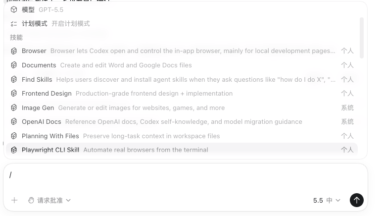

内部上手指南
Codex 快速入门
本文档面向首次使用 Codex 的公司内部同事，重点说明一键配置 API 工具、API Key 申请方式、Codex 教程入口和 Skills 库的基本用法。
下载自动化配置工具，解压后双击 双击运行.bat 文件。
API Key 统一在钉钉上找软件部程昊工程师申请，拿到后按工具提示输入。
需要特定场景能力时，先到 Skills 库查看是否已有可复用 Skill。
自动化配置工具
从页面顶部下载 一键配置api_v2.rar，解压后进入文件夹，双击 双击运行.bat 启动配置程序。
API Key 统一在钉钉上找软件部程昊工程师申请，拿到后粘贴到工具输入框。
工具会自动完成 Codex key 配置，普通用户不需要手动编辑配置文件。
完成后重新打开 Codex，让新的 key 配置生效。
配置 Codex Key
| 步骤 | 说明 |
|---|---|
| 获取 API Key | API Key 统一在钉钉上找软件部程昊工程师申请。 |
| 运行配置工具 | 解压后双击 双击运行.bat 并输入 API Key，不要在公共聊天、截图或文档中暴露完整 key。 |
| 确认生效 | 重新打开 Codex 后，在测试项目中提出一个简单任务，确认 Codex 可以正常响应。 |
Codex 使用教程
外部教程
Codex的下载和基础使用可参考菜鸟教程：Codex教程简介，核心概念，安装与使用等。
Skills 库
Skill教程
Skill 的基础概念、目录结构和使用方式可参考菜鸟教程：Skill教程。
Skill 是什么
Skill 是把某类高频任务沉淀成可复用的 AI 工作方法，通常会包含使用说明、参考资料、脚本、模板或业务规范，让 Codex 在处理特定场景时少走弯路。
进入 Skills 库，按业务方向或关键词找到对应 Skill，查看适用场景和使用说明。
内部开发 Skill 按页面提示下载安装；开源或官方 Skill 可查看项目来源和使用提示。
使用方法为 / 找到指定的 Skill，也可以在任务描述中说明要使用某个 Skill。

常见问题
| 问题 | 处理方式 |
|---|---|
| 工具运行后仍无法使用 | 确认 API Key 是否完整、Codex 是否已重新打开，必要时联系管理员检查额度和权限。 |
| API Key 是否可以发给别人 | 不建议转发个人 key。团队共享 key 也应按管理员要求使用，不要写入公开仓库。 |
| Codex 输出是否可以直接上线 | 不可以直接跳过复核。涉及业务逻辑、数据安全、配置变更和对外材料时必须人工检查。 |